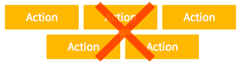

Lucca UI - Guidelines for buttons
You shouldn't have more than 2 primary button per page.
Other actions of less importance will be displayed as flat button or just links.


Save and cancel buttons should be displayed side by side, right aligned below the targeted area.
Always display the main action button on the left, and the second action button on the right:

You should avoid using icons inside the buttons, as the label should be self-explanatory. There are a few exceptions:
- When you have 2 actions that are equality likely to be considered as main action (ie. Approve/Deny)
- When you want to provide feedback to the user, right after he has clicked on the button